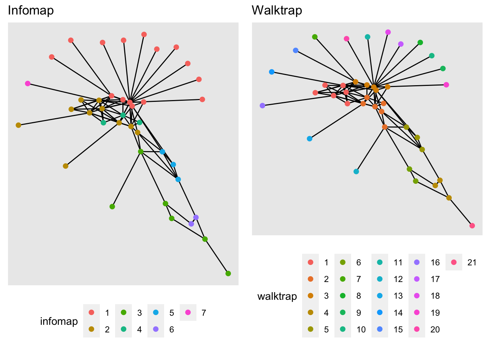
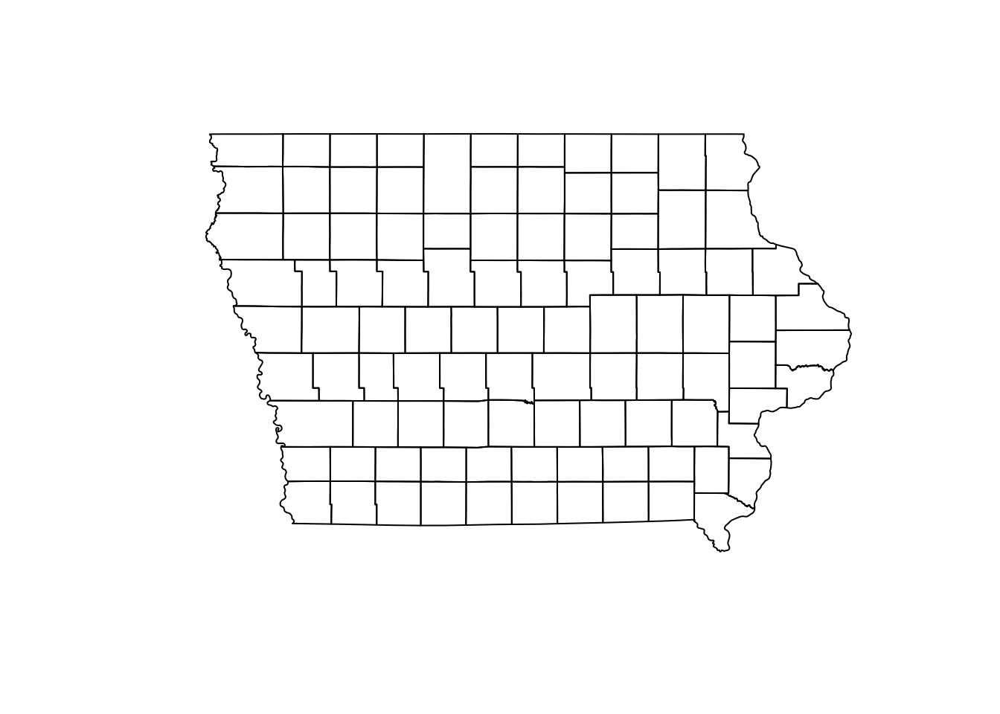

Lab 2
1 Community detection
# If you are starting a new sesion, load the files and libraries again
net <- readRDS("Data/Outputs/net.rds")
# Cargar los datos
node <- read.csv("Data/Outputs/node.csv")
edge <- read.csv("Data/Outputs/edge.csv")
library(igraph)
library(dplyr)
library(sf)Now we will use the walktrap algorithm for community detection in the observed network. For this we use the function cluster_walktrap().
# First we need to simplify the network
c<-simplify(net)
# Then we can use the function
wc <- cluster_walktrap(c)
# To identify the communities we use:
membership(wc)## Iowa Select Farms Inc
## 2
## Stanley Martins Fleckvieh Farms
## 3
## Centrum Valley Farms
## 1
## Hilltop Farms fresh produce
## 2
## Hog Slat Inc.
## 1
## Safari Iowa Hunting Farms
## 1
## Kloubec Koi
## 2
## Johnson Farms Supply
## 4
## Kroul Farms
## 2
## Steve Robinson Farm Shop
## 2
## Loess Hills Lavender Farm
## 2
## Uncle Bill's Farm
## 2
## Wild Woods Farm
## 1
## Western Iowa Farms LLC
## 2
## Mushroom Mills
## 3
## Kruger Farms
## 2
## US Farm Lease
## 4
## Dawn Golden Farms
## 1
## Kris Del Farms Corporation
## 2
## Lapp‰ö_å©'s Bee Supply and Honey Farm LLC
## 1
## Nelson Pioneer Farm & Museum
## 4
## WinMor Farms
## 2
## Armstrong Research Farm
## 3
## Cinnamon Ridge Farms
## 3
## Rustik Rooster Farms
## 3
## Picket Fence Creamery
## 2
## Doe's and Diva's Dairy, Inc.
## 3
## Bushman Family Farms Inc
## 2
## Johnson Farms Inc
## 4
## Premier Grain
## 4
## Bethany Farm
## 2
## Farm Sweet Farm at Rosmann Family Farms
## 2
## Iowa Farm Family
## 4
## Iowa State University Horticulture Research Station
## 4
## RJM Farms Inc
## 4
## Practical Farmers of Iowa
## 4
## Bass Farms
## 4
## A & D Farms Inc
## 4
## Geno Source
## 4
## Tatonka Farm
## 4# We can plot the network and the comunities.
plot(wc, c, edge.arrow.size=.2,vertex.size=4,vertex.label=NA)2 Spatial representation of the network
# Loading the packages
library(sf) # Package for spatial objects
library(ggplot2) # package for plots
# We load the spatial object from the package STNet
iowa <- st_read(system.file("data/Io.shp", package = "STNet"))## Reading layer `Io' from data source `/Library/Frameworks/R.framework/Versions/4.0/Resources/library/STNet/data/Io.shp' using driver `ESRI Shapefile'
## Simple feature collection with 99 features and 2 fields
## geometry type: POLYGON
## dimension: XY
## bbox: xmin: -96.63567 ymin: 40.37454 xmax: -90.13931 ymax: 43.50465
## geographic CRS: WGS 84# plot map using sf
plot(iowa$geometry)
Now we can transform the nodes as a spatial points object:
NodeSp <- node %>% # This is our node data.frame
st_as_sf(coords = c("long", "lat"), # Variables for the coordinates
crs = st_crs(iowa)) # This is the CRS we are using2.1 Plotting our map
One of the nice things of ggplot is that we can create a map and store it in an object and later we can keep adding layers to this map.
map <- ggplot() +
geom_sf(data = iowa, # name of the spatial dataset
color="grey20", # color of the shape border
fill="white", # fill of the shape
size=0.4) + # width of the border
theme_void() # This is a theme form ggplot2.2 Plot the nodes
Now we will add the nodes to our map
map + geom_sf(data = NodeSp, # name of our data
aes(color = farm_type, # we color the nodes by farm type
size = indegree)) +
ggtitle("Farms and their indegree") # the title of our plot
Excercise: Make the same plot, but make the size of the nodes relative to outdegree
2.3 Adding the euclidean contacts
# The function geom_segment adds a straigth line between two coordinates:
map +
geom_segment(data=edge,
aes(x=O_Long, y=O_Lat, # this is where the line starts
xend=D_Long, yend=D_Lat)) # this is where it ends
# We can add the information of the type of movement to change the color of the line and the number of animals for the transparency
map +
geom_segment(data=edge,
aes(x=O_Long, y=O_Lat,
xend=D_Long, yend=D_Lat,
color=type_orig,
alpha = pigs.moved))2.4 Putting everything together
#plot nodes & edges - add both commands geom_segment and geom_point#
map +
geom_segment(data=edge,
aes(x=O_Long, y=O_Lat,
xend=D_Long, yend=D_Lat,
alpha = pigs.moved),
show.legend=F) +
geom_sf(data = NodeSp,
aes(color = farm_type,
size = indegree), show.legend = "point")2.5 Subsetting the data
# plot movements from sow farms only
map +
edge %>%
filter(type_orig == "sow farm") %>%
geom_segment(data = .,
aes(x=O_Long, y=O_Lat,
xend=D_Long, yend=D_Lat,
color = type_orig), show.legend = F) +
geom_sf(data = NodeSp,
aes(color = farm_type), size=3, show.legend = "point")
# plot only movements between GDU to sow farm
map +
edge %>%
# filter(type_orig == "sow farm" & type_dest == "sow farm") %>%
filter(type_orig == 'GDU', type_dest == "sow farm") %>%
geom_segment(data = ., aes(x=O_Long, y=O_Lat,
xend=D_Long, yend=D_Lat,
color = type_orig), show.legend = F) +
geom_sf(data = NodeSp,
aes(color = farm_type),
size=3, show.legend = "point") +
ggtitle("GDU to Sow farm Movments")3 Kernel density map
Like we just saw, visualizing the movements can be challenging, one approach to do this is using a kernel density map. The idea behind this is to extrapolate values in a continuous surface, but here we are just interested in the visualization of the values, not so much in the interpolation of our values.
We will use the package KernSmooth for this, so make sure you ahve it installed.
First we will define a function to automate the process:
library(KernSmooth)
library(raster)
# we will create a function to create a density raster:
processRaster <- function(x, b, shp, res = c(200, 200)) {
est <- bkde2D( # we use the function bkde2D to obtain our values
x, # This will be our dataset
bandwidth = c(b, b), # The bandwidth we define
gridsize = res, # the resolution level we want
range.x = list(extent(shp)[c(1, 2)], extent(shp)[c(3:4)])
)
# Add the results to a raster
r <- raster(list(
x = est$x1,
y = est$x2,
z = est$fhat
)) %>%
`projection<-`(st_crs(iowa)) %>% # set the CRS
`extent<-`(extent(iowa)) %>% # set the extent
crop(., iowa) %>% # crop the raster to the area
mask(., iowa) # crop the raster to the stat shape
return(r)
}Now lets use our function for the data.
# Obtain the estimated kernel with bandwidth 2km
Erc <- processRaster(x = edge[,c("O_Long", "O_Lat")], # we want the outgoing only
b = 2, # we choose a bandwidth of 2
shp = iowa) # we set our extent
# plot the raster and the map
plot(Erc)
plot(iowa$geometry, col=NA, border = "grey80", add = T)
We might have used a very large bandwidth in the previous plot, lets try with a smaller size.
# Using a different bandwidth
Erc <- processRaster(x = edge[,c("O_Long", "O_Lat")],
b = 0.1,
shp = iowa)
# plot the raster and the map
plot(Erc)
plot(iowa$geometry, col=NA, border = "grey80", add = T)Excercise: Create a kernel density map for the incoming movements.